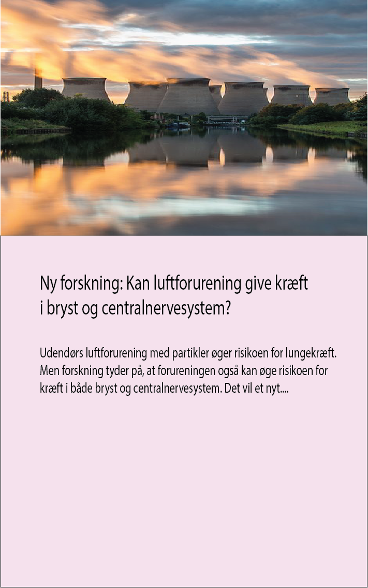
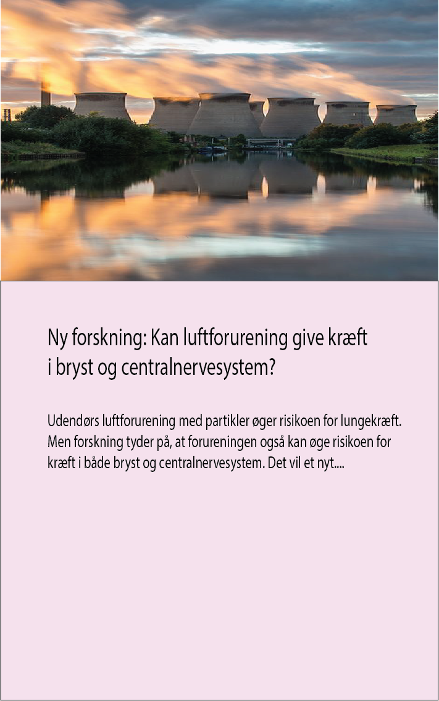
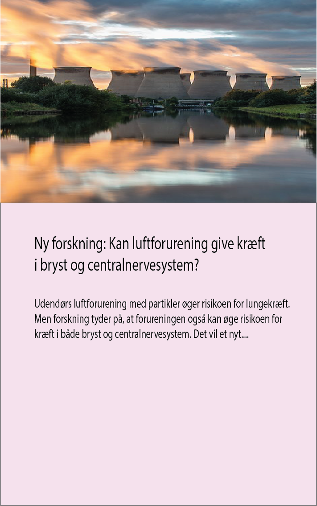

Vi er utroligt begejstrede for at præsentere en helt særlig mulighed for alle
dedikerede ELLE læsere. Dette månedens ELLE magasin
er mere end bare mode og skønhed – det er også en hjertevarmende gestus
til brystkræftramte kvinder og deres pårørende.
Køb årets e-magasin og vær med til at gøre en forskel for
brystkræftramte. Her kan du være med på de
seneste trends indenfor mode, skønhed og
livsstil sammen med ELLE med et streif
af Støt Brysterne, hvorfor du kan forvente PINK tema.
Tak for din støtte, og for at gøre ELLE magasinet til mere end bare mode.
Støt via sms
Støt via betalingskort
Støt via mobilepay

DET GÅR PENGENE TIL
Kræftens bekæmpelse arbejder indenfor 3 områder
1.
Forskning redder liv. Derfor arbejder
vores forskere hver dag for at sikre,
at brystkræft opdages tidligere, at
behandlingerne gøres mere skånsomme
og at flere brystkræftoverlevere har et
godt liv på den anden side af en
diagnose.
2.
Patientstøtte er vores tilbud til
kræftramte kvinder og deres familier,
om gratis rådgivning og støtte via
bl.a. Kræftlinjen og i vores kræft-
rådgivninger landet over.
3.
Oplysning kan forebygge kræft. Og
flere end fire ud af ti kræfttilfælde
kan forebygges. Vi arbejder derfor
fortsat på at fortælle, hvordan de
gode råd kan omsættes til konkret adfærd, der mindsker risikoen
for kræft.


 
